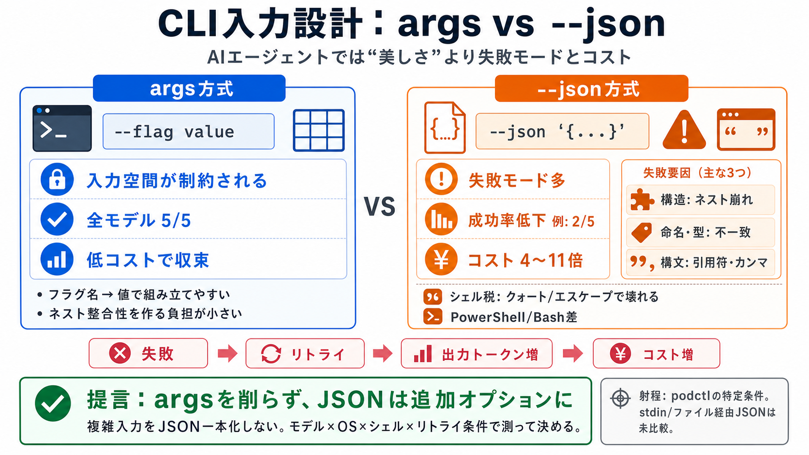

Slide
02 / 14
CLI入力設計の現実
argsより
--json
？
AIコーディングエージェントがCLIを叩くとき、入力の渡し方は「理屈」より「失敗モード」と「コスト」で決まる。
結論
複雑な入力は、argsを削ってJSON一本化しない。
根拠
成功率の低下と、シェルエスケープ税でコストが増えやすい。
※ここでは「--json '...' をコマンドライン引数として渡す」前提の実測が中心。
Problem
03 / 14
“JSONが美しい”罠
直感 vs 実行
階層構造はJSONが得意に見えるが、エージェント運用では別の要因が主役になりやすい。
直感
ネスト・型・フィールド名を明示できる。
実行系
シェルのクォート/エスケープで壊れる。
運用系
失敗→リトライが増え、出力トークンが増える。
Architecture
04 / 14
podctlで比較
同じ条件で
合成CLI「podctl」を使い、(i) args方式のみ、(ii) --json方式のみ、を同一評価基準で比較した。
方式 i
--flag value
の個別引数（args）だけを許可。
方式 ii
--json '{...}'
のみを許可（構造はJSON）。
対象モデル複数・評価は「正確性」と「コスト」を中心に実測。
evidence
05 / 14
正確性：argsが強い
5/5 vs 低下
args方式は全モデルで5/5の正確性だった一方、JSON方式はモデルごとに成功率が落ちた。
args方式
全モデル：
5/5
JSON方式
最小クラス：
2/5
など、モデル差が拡大
ポイントは「モデル理解だけ」ではなく、失敗が誘発される構造（入力・渡し方）にある。
evidence
06 / 14
コスト：4〜11倍
高いのは試行
JSON方式は全モデルでargsより4〜11倍コストが高かった。主因は失敗→リトライの増加。
args
低コストで収束しやすい
JSON
失敗が増えやすい
結果
リトライ出力トークンが増える
出力トークン（=やり直し）が特に高価になるため、差が広がる。
metaphor
07 / 14
入力空間の圧縮
argsは“格子”
args方式は、
--help
にある選択肢・型・（enumがあれば）値をそのまま有効入力集合にする。
制約が明示
エージェントは「フラグ名→値」の対応で組み立てるだけ。
失敗が減る
ネスト整合性・構文成立を“自力で作る”負担が減る。
そのためモデルの弱点が吸収され、成功率にモデル依存が出にくい。
distinction
08 / 14
JSONは“失敗モード多”
壊れ方が増える
JSON方式は「構造（ネスト）」「フィールド名・型」「構文エラー」など失敗モードが多く、直す必要が出やすい。
構造
ネスト整合性が崩れる（例：配列/オブジェクトの入れ違い）
命名・型
フィールド名/型が微妙に不一致
構文
JSONとして成立しない（引用符・カンマ等）
直すには追加生成が必要になり、コスト差が拡大する。
distinction
09 / 14
シェル税：核心
クォート/エスケープ
JSONを
--json '...'
のように“文字列”として渡すと、シェルのクォート解釈で簡単に崩れる。
PowerShell
JSON失敗が目立ちやすい（引用符のネスト/エスケープ差）
Bash
差は縮むことがあるが、環境差は残る
“正しいはずのJSON”が“正しく渡らない”が起きるため、JSON一本化が危険になる。
comparison
10 / 14
args vs JSON（要点）
どちらが有利？
この実験条件では、argsは精度・コストの両面で優位。JSONは“悪”ではなく“渡し方次第で壊れやすい”。
args方式
入力空間が制約される
失敗が減り、リトライも減る
JSON方式
失敗モードが増える
シェル税でさらに壊れやすい
「JSONがダメ」ではなく、特に“コマンドライン文字列で渡すJSON”が弱い。
process
11 / 14
測ってから決める
shouldより実測
JSONの階層性という“もっともらしさ”より、モデル・OS・シェル・リトライ許容を含めて測定して決める。
必要な観点
① モデル差
② OS/シェル差（クォート解釈）
③ 失敗時のリトライ設計
運用判断
argsは残し、JSONは“用途限定で追加”。一本化は最後まで検証する。
（bilingual）測定する：
計測する
（keisoku suru）
distinction
12 / 14
射程の注意
一般化は慎重に
合成CLI「podctl」の特定シナリオでの結果。渡し方（stdin/ファイル指定など）を比較していない点は限界になる。
限定条件
実験は特定の入力サイズ/構成
未比較
stdin・ファイル経由でのJSONは未検証
解釈
結論は「コマンドライン文字列のJSONが壊れやすい」可能性もある
だからこそ、あなたの環境で同じ評価を回す価値が高い。
closing
13 / 14
実装者の提言
残すべきは
args
複雑入力を“JSONに置き換える”助言は、成功率低下とシェルエスケープ税で逆効果になり得る。
提言
argsを削らず、JSONは追加オプションとして設計する。
実務手順
モデル×OS×シェル×リトライ条件で“動く確率”と“コスト”を測る。
次の一歩：あなたのCLIで
--json '{...}'
をどう渡しているか（Bash/PowerShell等）を棚卸しし、同じ評価軸で試す。
REFERENCES
14 / 14
References
No references found